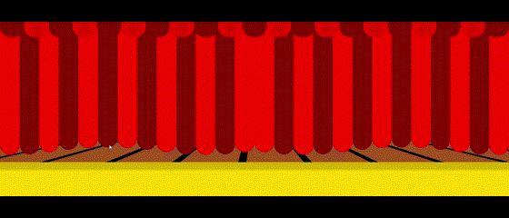

Weekly Nerd
-
Wat van de Weekly Nerd sprekers* ga je meenemen, waarmee wil je gaan oefenen...
Ik ga gebruik maken van de GSAP library, dit omdat werken met animaties altijd leuk is en het maakt ook je website wat proffesioneler.
Tijdens mijn volgende project wil ik ook de methodes van Jeremy Keith toepassen. Bijvoorbeeld de knoppen declaratief houden, dus alleen javascript toevoegen voor gedrag.
Ook wil ik de methodes meenemen van Kilian Valkhof die praat over de "Rule of least power" en zijn Geavanceerde css technieken.
De uitkomst van de Hackaton met daarbij jouw inbreng en nieuwe inzichten.
Tijdens de hackaton heb ik mij gefocust op twee nieuwe technieken. Namelijk siblin index en anchor positioning. Daarnaast heb ik mij ook ingezet voor het maken van de podium en de scherm derachter.
De gordijnen zijn gemaakt met een sibling index. In versie 1 gebruik ik geen sibling index en in versie 2 wel dit ziet er zo uit:
Versie 1 Versie 2 animation-delay: calc(var(--index) * .5s); animation-delay: calc(sibling-index() * 200ms); &:nth-child(1){--index: 1;} &:nth-child(2){--index: 2;} &:nth-child(3){--index: 3;} &:nth-child(4){--index: 4;} &:nth-child(5){--index: 5;} &:nth-child(6){--index: 6;} &:nth-child(7){--index: 7;} &:nth-child(8){--index: 8;} &:nth-child(9){--index: 9;} &:nth-child(10){--index: 10;} &:nth-child(11){--index: 11;} &:nth-child(12){--index: 12;} &:nth-child(13){--index: 13;}-
Podium en gordijnen v1.
op hover gaan de gordijnen open en dicht.
 -
Siblingindex.
hier gebruik ik sibling index om dan een animation delay te geven waardoor je een wavy effect krijgt.

-
gordijn-v2
tweede versie en eind versie van de gordijnen.

-
gordijn-v2 openen
Hier zie je hoe de gordijnen nu open gaan samen met de spotlights.

-
Achtergrond scherm voor de informatie van de vrouwen.
Hier zie je een soort portfolio waar je de gegevens van de vrouwen terug ziet.

-
Anchor positioning voor de spotlights
Op hover gaan de spotlights weg zodat je de screen beter kan zien en met anchor positioning gaan ze weer terug naar hun plek op unhover.

-
-
Een reflectie (2/3) hoe het tot nu tot gaat (grootste leermomenten, viel mee, nog lastig, trots op...).
-
Hoe gaat het tot nu toe
Ik merk zeker dat ik ben gegroeid in mijn gebruik van code. Ik ben er nu zeker van dat ik alles kan doen met coderen en niet bang hoef te zijn dat het niet lukt. Ik zie nu ook in dat wanneer iets niet lukt dan is er wel altijd een ander oplossing te vinden. De problemen maak ik dan zelf aan en die probeer ik dan op te lossen.
-
Mijn grootste leermomenten
-
Ik heb geleerd hoe belangrijk het is om eerst mobiel first of desktop first te bouwen en niet in het midden beginnen. Het beste is mobile first, hiermee merk ik dat het designen veel simpeler gaat. Mobile first is natuurlijk alles zoveel mogelijk onder elkaar zetten en vervolgens kan je met media queries de grid veranderen naar iets simpels en leuk. Het is natuurlijk altijd leuker om eerst desktop te beginnen, want dan heb je zeker meer ruimte voor creativiteit. Maar dat heb je ook na de mobile first. Met desktop first beginnen heeft natuurlijk zijn voordelen op zijn tijd.
-
Ik maak veel gebruik van de :has selector, dit maakt het gebruik van Javascript onnodig bepaalde functies. Zoals een klik en actie functie of een klik en verdwijn functie bijvoorbeeld.
-
Ik heb geleerd om te kijken naar code met meer begrip. Wanneer ik kijk naar een code kan ik de fout inzien en daar een oplossing bij bedenken.
-
Ik heb geleerd om te werken met position absolute, transform translate en inset. Je kan dus ook gemakkelijk een absolute in een absolute gebruiken. Heerlijk is dat.
-
Ook heb ik veel ervaren met animaties en hoe je dit kan manipuleren door meerdere animaties in een element te plaatsen.
-
Ik heb leren werken met clip mask, gradients, box shadows en border om zo de vormen te creeëren die ik wil gebruiken.
-
Ik weet nu hoe ik
-
-
Wat viel mee?
Voor mij viel er niet veel mee. Ten aanzien op dat ik het heel erg leuk vond om te experimenteren en te leren met de technieken die ons is aangeboden. Toch vond ik het lastig om alles te doen wat ik wilde doen omdat wij zo weinig tijd hadden voor de projecten zelf en natuurlijk omdat ik zelf op tijden laks was geweest. Wat er verder mee viel waren de opdrachten van de projecten. Ik vond het wel leuke opdrachten waarin ik mijzelf in kwijt kon raken.
-
Wat vind ik nog lastig?
-
Ik vind het zeker nog lastig om te werken met Jacascript. Nu met de hulp van chatGPT kan ik wel alles doen wat ik wil met Javascript, maar helaas kan ik de code nog niet begrijpen. Het fetchen van data uit een API lukt zeker wel, maar het schrijven van de functionaliteiten kan ik niet uit mijn hoofd.
-
Ook vind ik het lastig om te designen. Soms wil ik teveel waardoor het eerder chaotisch lijkt. Ik loop ook altijd meer vast met het designen dan met het coderen.
-
Ik vind het ook lastig om geordend te blijven. Er moet zeker meer aandacht in de structuur van mijn mappen.
-
-
Waar ben ik trots op?
Ik ben trots op de projecten die ik heb gemaakt. Ik ben vooral trots op mijn CSS to the rescue project en mijn API-project. In deze twee projecten heb ik mijzelf heel erg uitgedaagd op een leuke manier. Ik wist niet of ik het zou halen maar toch is het mij gelukt. Alhoewel ik nog meer had willen toevoegen, maar om in zo een korte tijd zoveel te kunnen leren, ervaren en te maken, kan ik wel zeggen dat ik zeker trots kan zijn. Ook ben ik trots op mezelf dat ik toch een doorzettingsvermogen heb kunnen creeëren wat betreft het coderen. Als iets niet lukt dan geef ik niet op tot het wel lukt.
Drie persoonlijke leerdoelen voor de meesterproef. Die worden onderdeel van de beoordeling. Goed om persoonlijke leerdoelen op verschillende vlakken te kiezen: bijv. inhoud, samenwerken, tooling, lef ... of andere competenties. Geef ook aan hoe je van plan bent om aan elk leerdoel te werken tijdens de meesterproef.
Ik wil meer gebruik maken van een pen en papier. Ik design wel in code, maar ik merk dat wanneer ik een voorbeeld al heb dat het coderen veel sneller gaat. Want het designen in code laat mij denken aan twee onderwerpen tegelijkertijd. Wat ik wil en wat ik moet maken. Mijn eerste leerdoel is meer tekenen.
Ik maak geen gebruik van de :root en variabelen in CSS. Ik wil namelijk graag te snel verder en dan geef ik een random kleur. Maar als ik eerst begin met het maken van de :root en het onderzoeken naar kleuren die ik wil gebruiken, dan scheelt dit mij ook weer wat tijd aan het eind van mijn project. Dit zou mijn projecten ook wat meer toegankelijker maken voor anderen en ook voor mezelf.
Ik wil ook meer aandacht geven aan de structuur en opbouw van mijn documenten. Naar mijn mening vind ik het lekkerder om alles in 1 html te zetten, ik hoef dan alleen ctrl f te klikken en dan vind ik al wat ik zoek. Terwijl met meerdere documenten zoek ik toch wat langer naar wat ik nodig heb. Maar ik weet dat dit niet de juiste manier is. Ik wil dus meer structuur aanbrengen in mijn documenten. Dit maakt mijn project ook weer meer toegankelijker voor anderen en ook wel voor mezelf als ik dit juist aanpak.
-